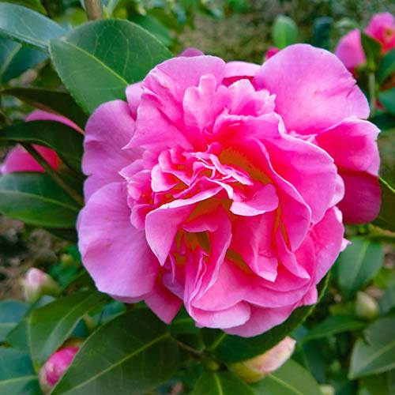
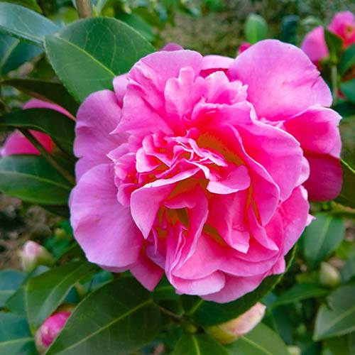

Common Name: Camellia japonica, 山茶花
Botanical Name: Camellia-japonica
 

Other references
RHS
Gardenia
Product Information
One of the nation's favourite early spring plants, Camellias are, when given the right conditions, very straightforward and problem free.
Providing fabulous displays of flowers when almost every other plant is still asleep for winter, they’re ideal for providing a bold splash of colour when the garden is quite drab – plus they’re fabulous in pots where they can be moved to any part of your garden.
The key to success with Camellias is they need acidic soils - like Rhododendrons. This means they can easily be grown in pots in ericaceous composts, and provided they are fed with specialist ericaceous feed, will provide many years of colour and interest.
They are evergreen, and their neat, shiny, tough leaves will provide a backdrop to other plants all year.
Flower buds start swelling late the previous summer, and keep getting bigger all autumn and winter, until they burst open in early spring. The flowers can be caught by frosts when they are opening, but the buds are generally fine, and the plant is 100% hardy and tough.
Supplied as three plants in 9cm pots ready for potting on or planting out, each Camellia collection contains one each of:
Mikenjaku - Vivid, scarlet-red, semi-double blooms with a central crown of yellow stamens 3m x 2m. Fl Feb - April
Brushfield's Yellow - Creamy white, anemone-form blooms with a light-yellow tone to the centre of the flower. 4m x 2.5m. Fl Feb - April
Triumphans - Deep rose-pink, double blooms. 3m x 3m. Fl Feb - April
Top Tips
Early morning sun will damage frost-covered buds, so be sure to plant in dappled shade where the sun doesn't get to the plant until late morning.
Care Information
To prevent damage to the buds and flowers protect from cold, dry winds and early morning sun.
Water established plants in dry weather to prevent bud drop, especially in the summer months when the buds are forming out of sight.
Apply a balanced liquid fertiliser in mid-spring and again in June and mulch annually with shredded bark or well-rotted leaf mold.
After flowering, lightly trim or prune any branches that spoil the appearance of the plant.
| DESC | Description_PLACEHOLDER |
| SOW | SOW_INFO_PLACEHOLDER |
| CARE | CARE_INFO_PLACEHOLDER |
| FLOWERS | FLOWERS_DETAILS_PLACEHOLDER |
| TIP | tips tips_PLACEHOLDER |
- item 1
- item 2
- item 3
- item 4